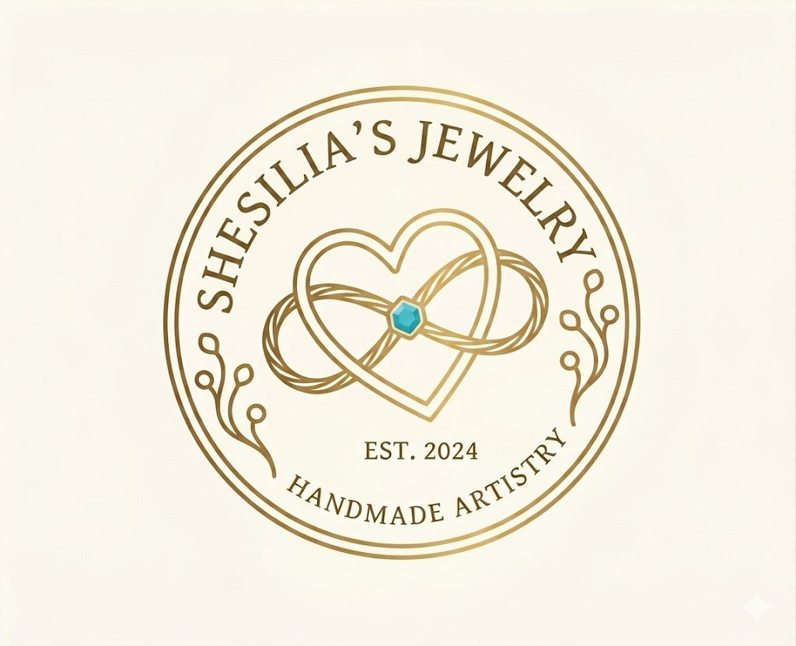

Shesilia's Jewelry lahir dari kecintaan mendalam terhadap seni kerajinan tangan. Setiap perhiasan yang kami buat adalah ekspresi kreativitas, dibuat dengan tangan dan hati tidak ada dua karya yang benar-benar sama.
Shesilia's Jewelry adalah toko perhiasan dan aksesori handmade berbasis di Jakarta. Setiap produk dibuat satu per satu dengan tangan menggunakan bahan-bahan pilihan berkualitas, mulai dari kawat emas, batu alam, manik kristal, hingga resin bunga kering asli.
Kami percaya bahwa perhiasan bukan sekadar hiasan ia adalah ekspresi diri. Itulah mengapa setiap karya dikerjakan dengan penuh kesabaran dan perhatian pada detail, menghasilkan produk yang unik dan tidak ada duanya.
Shesilia's Jewelry melayani pembelian ready stock maupun pesanan custom sesuai keinginanmu, dengan pengiriman ke seluruh Indonesia. Lebih dari 200 karya telah terjual dan menemani momen spesial pelanggan kami.

Toko perhiasan dan aksesori handmade berbasis di Jakarta. Setiap karya dibuat satu per satu dengan bahan pilihan berkualitas — unik, personal, dan penuh makna.
Setiap produk dibuat sepenuhnya dengan tangan, bukan mesin. Tidak ada dua karya yang identik.
Kami menggunakan bahan-bahan alami dan material daur ulang untuk menjaga bumi tetap sehat.
Setiap pesanan custom dikerjakan dengan penuh perhatian sesuai keinginan dan cerita kamu.